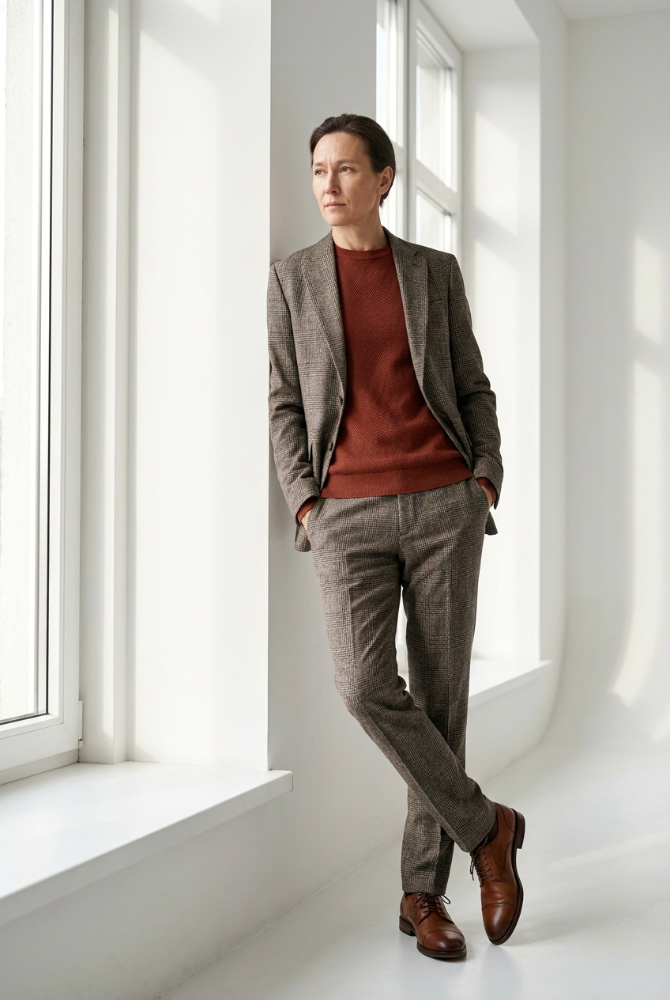
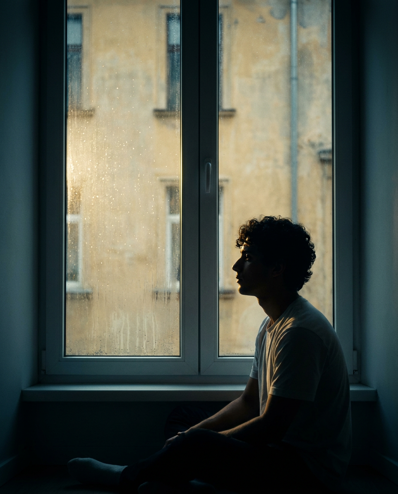
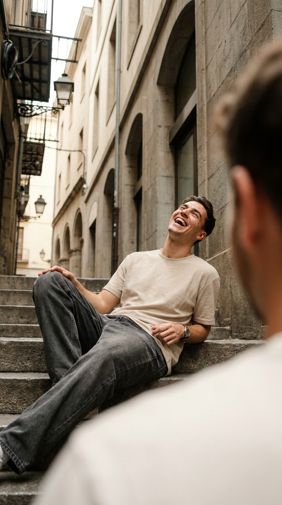
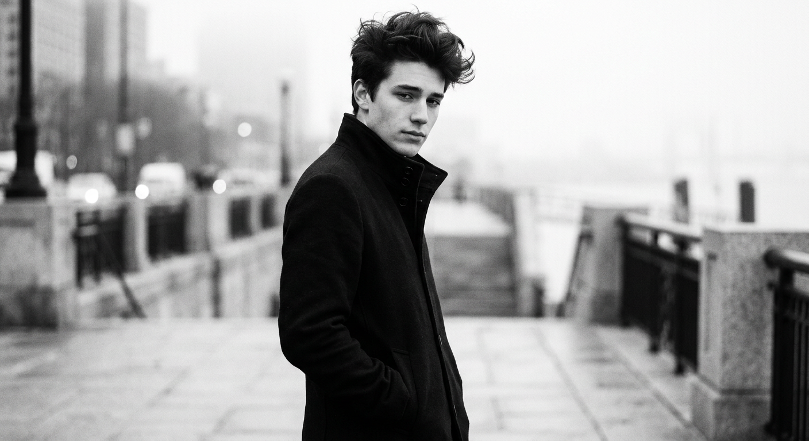
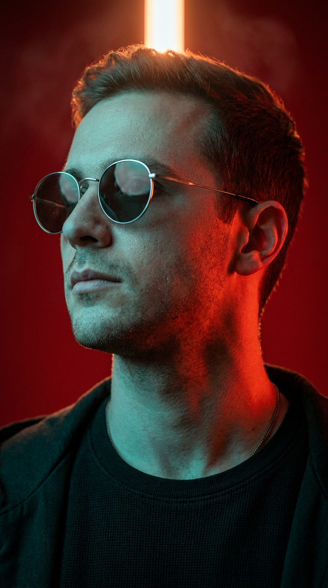
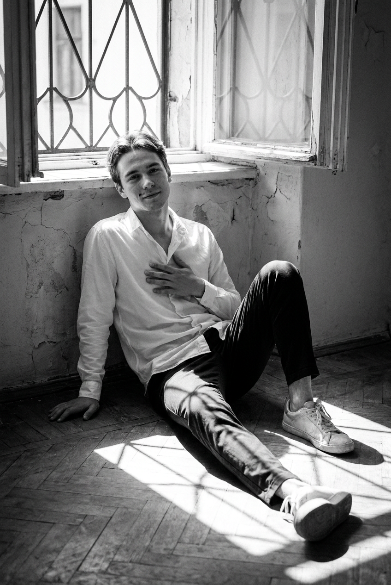
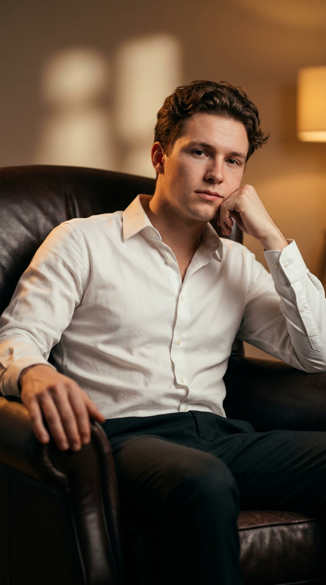
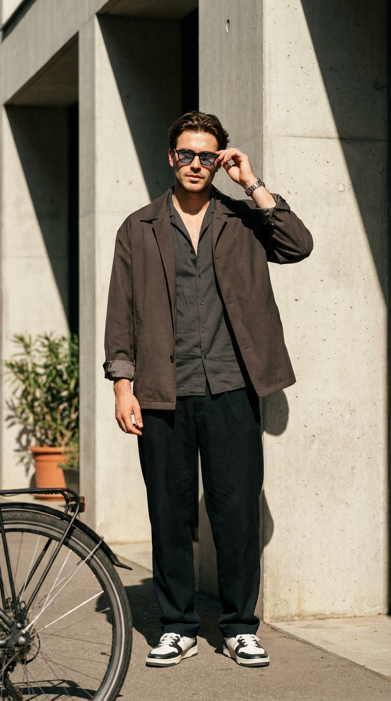
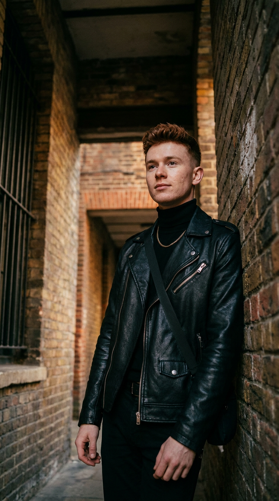
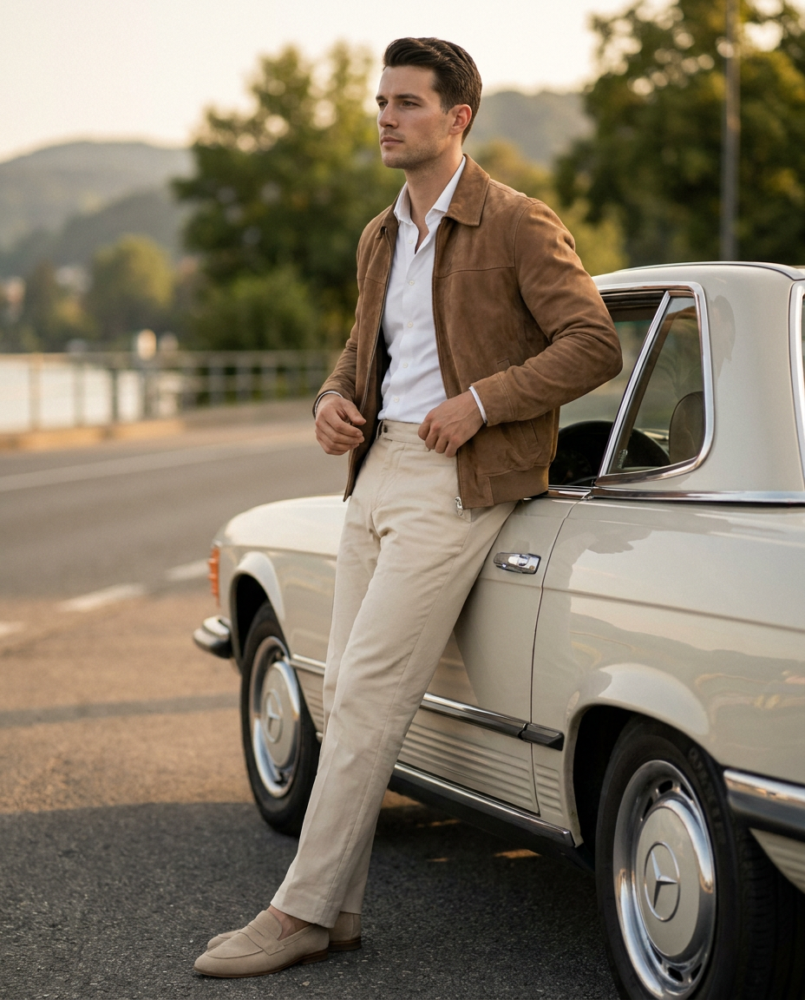

Мужское ИИ-фото: 10 промптов для нейросети

Обычный портрет часто выглядит слишком постановочным: лицо теряет характер, поза становится деревянной, а одежда и свет не работают вместе. Генерация помогает быстро собрать образ под конкретное настроение — от строгой fashion-съёмки до расслабленного street-style кадра.
В подборке — 10 промптов для мужского ИИ-фото: минималистичный интерьер, тёмная комната у окна, лестница, чёрно-белая плёнка, synthwave-неон, кожаное кресло, кирпичная арка и классический автомобиль. Подставьте референс лица и при необходимости уточните возраст, одежду или формат кадра.
Как сгенерировать такое фото: пошагово
Нужен снимок анфас при ровном свете, лицо в кадре целиком, без тёмных очков и головных уборов. Разрешение от 1000 пикселей по короткой стороне. Чем чётче исходник, тем точнее модель повторит черты.
Выберите сценарий ниже и нажмите «Копировать» — текст уйдёт в буфер целиком, вместе с командой сохранения внешности. Эта команда стоит первой строкой и отвечает за то, чтобы на выходе было ваше лицо, а не случайное.
Кнопка «Сгенерировать» рядом с каждым промптом открывает модель в новой вкладке. Nano Banana Pro работает с референсом лица — в отличие от моделей, которые генерируют портрет с нуля и узнаваемость теряют.
Промпт — в поле ввода, портрет — через загрузку референса. Порядок значения не имеет, но без референса команда сохранения внешности работать не будет: модели нечего сохранять.
Для сторис и ленты берите 9:16, для превью и обложек — 4:3. Первый результат редко идеален: если поза или свет ушли не туда, поправьте соответствующую часть промпта и запустите заново. Обычно хватает двух-трёх итераций.
10 промптов для генерации
1. Костюм у большого окна
Строго сохранить внешность по загруженному референсу: черты лица, пропорции, мимику и текстуру кожи без изменений. Фотореалистичная fashion-editorial съёмка, вертикальный кадр в полный рост, соотношение сторон 4:5 или 9:16. Взрослый мужчина стоит в светлом минималистичном интерьере возле большого окна, слегка опираясь плечом на белую стену или откос. Одна нога пересекает другую, руки спрятаны в карманы брюк, корпус немного развёрнут к объективу, голова отведена в сторону. Выражение спокойное, задумчивое и чуть отстранённое, поза расслабленная, уверенная, естественная. На нём классический костюм в тонкую клетку: пиджак плотной дорогой ткани, аккуратный tailored fit, слегка приталенный силуэт, сдержанная мужская или унисекс-эстетика. Передать фактуру костюмного материала, естественную кожу, узнаваемую мимику и реалистичные складки одежды. Мягкий дневной свет из окна, премиальная журнальная стилистика, объектив 50 мм, высокая детализация.
2. Силуэт у ночного окна

Строго сохранить внешность по загруженному референсу: черты лица, пропорции, мимику и текстуру кожи без изменений. Фотореалистичный кинематографичный кадр в вертикальном формате 4:5–9:16, интерьер снят в эстетике low-key. Большая панорамная оконная ниша с двумя створками занимает часть композиции; молодой мужчина сидит прямо у окна на полу или широком подоконнике. Вокруг почти полная темнота, фигура читается как силуэт с тонкой контурной подсветкой. Он сидит боком, в пол-оборота вправо, голова повернута к оконному проёму. Колени подняты, ноги согнуты, спина слегка округлена; одна рука лежит на колене или поддерживает тело и видна лишь по линии силуэта. Тёмные вьющиеся волосы, светлая майка или футболка без принта, цвет растворяется в тени. Лицо не освещать напрямую: оставить только профиль и тонкие края волос, плеч и рук. За окном фасад жёлто-бежевого здания с окнами и архитектурными деталями. Ночное настроение, глубокие тени, объектив 35 мм, мягкое свечение снаружи.
3. Смех на бетонных ступенях

Строго сохранить внешность по загруженному референсу: черты лица, пропорции, мимику и текстуру кожи без изменений. Фотореалистичный кинематографичный street-life кадр, вертикальный формат 9:16, съёмка снизу с лёгкого low-angle. Молодой мужчина 25–35 лет сидит на бетонных или каменных ступенях у входа в многоэтажное здание. Лестница и края ступеней образуют сильные ведущие линии, подчёркивающие динамику. На переднем плане оставить частично размытый силуэт головы, плечо или фигуру другого человека, создающий эффект присутствия. Мужчина расслабленно откинул корпус назад: одно колено поднято ближе к камере, вторая нога вытянута вдоль ступени. Он смеётся, широко открыв рот, голова поднята к источнику света, выражение радостное и свободное. На нём светлая бежевая или белая хлопковая футболка с заметной фактурой, свободные джинсы либо брюки тёмно-серого или оливкового оттенка, на запястье часы. Дневной городской свет, естественные тени, небольшое размытие движения, объектив 28 мм, реалистичная кожа.
4. Монохромное пальто

Строго сохранить внешность по загруженному референсу: черты лица, пропорции, мимику и текстуру кожи без изменений. Чёрно-белая fashion-фотография в эстетике editorial и film still, вертикальная композиция от головы до колен или в полный рост. Молодой мужчина стоит в профиль на три четверти, лицо развёрнуто к камере, взгляд направлен немного вниз. Плечи расслаблены, руки находятся в карманах пальто, силуэт и линия воротника становятся главным визуальным акцентом. Волосы короткие, тёмные или каштановые, объёмные, слегка растрёпанные, зачёсаны вверх и назад. Мягкие юношеские черты, натуральная кожа без заметного макияжа, лёгкая тень под скулами; строгий монохром подчёркивает контур носа и губ. Одежда — чёрное длинное пальто или жакет с воротником-стойкой либо высоким отложным воротником, застёгнутое на пуговицы. Под ним тёмный костюм и брюки однотонной фактуры. Матовая плотная ткань, мягкие складки, направленный боковой свет, глубокие серые оттенки, плёночное зерно, объектив 85 мм.
5. Неоновый портрет в очках

Строго сохранить внешность по загруженному референсу: черты лица, пропорции, мимику и текстуру кожи без изменений. Фотореалистичный студийный портрет в стиле high-contrast neon и synthwave, вертикальный формат 9:16. Крупный план: голова и верх плеч, мужчина показан в профиль на три четверти слева направо, камера расположена чуть ниже уровня лица, взгляд направлен немного вверх и вдаль. Выражение спокойное и уверенное. Возраст 25–40 лет, короткая стрижка, натуральная кожа с видимыми порами и лёгкой фактурой щетины. На лице круглые металлические солнцезащитные очки с тонкой серебристой оправой; тёмные линзы отражают цветной свет, без оптических искажений. Тёмная футболка или лонгслив с рельефом трикотажа, тонкая цепочка на шее, на плечах может быть видна фактура тёмной куртки. Фон однотонный глубокого красного или алого цвета, фигура темнее фона. Слева на лицо и шею падает мощный холодный бирюзово-циановый свет, справа добавить контрастный красный или пурпурный контур. Жёсткий студийный свет, объектив 85 мм, чистая детализация.
6. У окна в старом доме

Строго сохранить внешность по загруженному референсу: черты лица, пропорции, мимику и текстуру кожи без изменений. Чёрно-белый вертикальный film still в документальной кинематографичной манере, средний план. Молодой мужчина с короткими тёмными вьющимися волосами и лёгкой щетиной сидит на деревянном полу у открытого оконного или дверного проёма в старом помещении. Он расположен ближе к центру и слегка развёрнут к падающему свету. Одна нога вытянута вперёд, другая согнута и закинута или перекрещена; одна ладонь опирается на пол сбоку, второе предплечье свободно лежит на корпусе у груди. На мужчине белая рубашка с мягкими складками, верх расстёгнут, ворот частично раскрыт, тёмные брюки и светлые кроссовки или другая светлая обувь. Лицо обращено к камере, взгляд спокойный, на губах едва заметная полуулыбка, настроение задумчивое. На фоне старая стена с отслоившейся штукатуркой, потёртостями и фактурой бетона или камня. Жёсткий свет из проёма, глубокие тени, натуральная кожа, объектив 50 мм, умеренное плёночное зерно.
7. Кресло и белая рубашка

Строго сохранить внешность по загруженному референсу: черты лица, пропорции, мимику и текстуру кожи без изменений. Фотореалистичный кинематографичный портрет молодого мужчины в вертикальном формате 9:16. Он сидит в кожаном кресле с высокой спинкой, корпус слегка развёрнут, в кадре хорошо видна посадка тёмных брюк. Левая рука расслабленно лежит на подлокотнике или рядом с ним, правая поднята к подбородку или щеке в позе задумчивой опоры; пальцы аккуратно согнуты. Взгляд направлен в сторону камеры или немного мимо объектива, выражение спокойное и сосредоточенное. Мужчина 18–30 лет, светлая кожа, короткие каштановые волнистые или вьющиеся волосы, аккуратные брови, чистое естественное лицо без чрезмерного макияжа, реалистичная текстура кожи. На нём молочно-белая рубашка с длинными рукавами и классическим воротником; верхняя пуговица застёгнута или оставлена в нейтральном положении, манжеты видны у запястий. Брюки чёрные или графитовые, матовая ткань. Тёплый направленный свет, мягкие тени кресла, камерная атмосфера, объектив 50 мм.
8. Городской образ с очками

Строго сохранить внешность по загруженному референсу: черты лица, пропорции, мимику и текстуру кожи без изменений. Фотореалистичный street-fashion портрет при дневном свете, вертикальная композиция 9:16, кадр от головы до обуви, камера на уровне глаз с лёгкой перспективной коррекцией. Молодой мужчина 20–30 лет стоит в полный рост у стены здания. Поза расслабленная: одна рука поднята к лицу и держит солнцезащитные очки либо поправляет их, вторая опущена, частично скрыта в кармане или находится у пояса. Голова немного повернута в сторону, выражение спокойное и уверенное. Короткие тёмные волосы слегка растрёпаны и объёмны сверху, возможна лёгкая щетина, кожа с естественной текстурой и солнечными бликами. На нём тёмная графитовая или чёрная рубашка с открытым воротом, без галстука, поверх накинута лёгкая куртка тёмно-коричневого или графитового цвета. Очки имеют тёмные линзы; глаза под ними не прорисовывать слишком явно. Реалистичная фактура ткани, городская стена, естественный дневной контраст, объектив 50 мм.
9. Кожаная куртка под аркой

Строго сохранить внешность по загруженному референсу: черты лица, пропорции, мимику и текстуру кожи без изменений. Фотореалистичный кинематографичный street-fashion кадр, вертикальный формат 9:16, съёмка снизу с лёгкого low-angle. Молодой мужчина стоит в нише под аркой или в углублении прохода между старыми кирпичными стенами. Кирпичная кладка по бокам образует мощные ведущие линии и глубокую перспективу. Мужчина находится ближе к правой стене, корпус чуть развёрнут, голова повернута к камере и немного поднята. Взгляд расфокусирован на дальней точке, выражение спокойное и уверенное, тело расслаблено. Одна рука свободно опущена вдоль тела, другая находится у кармана или удерживает ремешок либо край куртки. Светлая кожа, молодое лицо, короткие рыжевато-коричневые или каштановые волосы с объёмом и аккуратной укладкой, натуральная детализация кожи. На нём чёрная кожаная куртка с выразительной фактурой, мото-куртка или косуха, под ней чёрный гольф, свитшот или футболка. Жёсткий боковой свет, глубокие тени, объектив 35 мм, атмосферная старая архитектура.
10. Кабриолет и замшевая куртка

Строго сохранить внешность по загруженному референсу: черты лица, пропорции, мимику и текстуру кожи без изменений. Фотореалистичный кинематографичный street/lifestyle портрет, вертикальный формат 4:5 или 9:16. На переднем плане молодой мужчина 25–35 лет стоит рядом с классическим светлым кабриолетом или купе. Камера находится на уровне груди или талии, ракурс три четверти; мужчина повернут влево, подбородок слегка направлен вперёд, взгляд уходит вдаль мимо объектива. Он расслабленно опирается всем телом на автомобиль: одна рука лежит у ремня или пояса, вторая немного согнута и приближена к карману, ноги стоят вместе, колени не напряжены. Короткие тёмно-каштановые волосы аккуратно уложены, лицо чистое, без резких акцентов, кожа реалистичная и естественная. На нём коричневая замшевая или матовая кожаная куртка тёплого бежево-карамельного оттенка с мягким воротником и хорошо читаемой фактурой, под ней нейтральный тёмный верх. Светлый автомобиль с винтажными деталями, дневной городской фон, мягкие отражения на кузове, объектив 50 мм, премиальная журнальная цветокоррекция.
Что важно учесть в этом стиле
Мужское ИИ-фото держится не только на внешности героя. В каждом кадре нужно связать позу, одежду, источник света и окружение. Для editorial-портрета работают спокойная мимика, чистая геометрия пространства и объектив 50–85 мм. Для street-fashion лучше указать съёмку с лёгкого нижнего ракурса, фактуру стены и конкретный фокусный диапазон.
Формат 9:16 подходит для сторис и вертикальных обложек, а 4:5 оставляет больше воздуха вокруг фигуры. Если лицо начинает «плыть», уберите лишние эпитеты, добавьте «естественная текстура кожи», «пять пальцев на каждой руке», «без лишних конечностей» и отдельно опишите положение каждой руки.
Идеи для вариаций
- Замените дневной свет у окна на холодный дождливый рассвет.
- Добавьте к костюму тонкий галстук, брошь или винтажные часы.
- Перенесите лестничную сцену в метро, на крышу или к бетонному мосту.
- Сделайте неоновый фон синим, фиолетовым или зелёным вместо красного.
- Для чёрно-белого кадра задайте зерно 35-мм плёнки и лёгкую виньетку.
- Замените классический автомобиль на мотоцикл или старый седан.
Как собрать свой промпт
Начните с технической основы: фотореалистичный портрет, вертикальный формат, тип плана, ракурс и предполагаемый объектив. Затем задайте героя — возраст, волосы, выражение лица и положение тела. После этого опишите одежду через материал, цвет, крой и заметные детали: «замшевая куртка карамельного оттенка» точнее, чем просто «стильная одежда».
Последним блоком добавьте локацию и свет. Один промпт лучше строить вокруг одной сцены: например, «кожаное кресло, тёплый боковой свет, 50 мм», а не смешивать кресло, улицу и неоновую студию. Для стабильного результата сделайте 4–8 генераций, меняя за раз только позу, ракурс или цветовую схему.
Ошибки, из-за которых кадр не получается
- Слишком общая поза. Фраза «стоит красиво» не объясняет, куда направлены руки, ноги и голова.
- Противоречивый свет. Не задавайте одновременно прямой солнечный луч, ночной силуэт и мягкий студийный рассеиватель.
- Перегруженная одежда. Если в образе много фактур и аксессуаров, нейросеть может смешать их в один нечёткий предмет.
- Не указан формат. Без 4:5 или 9:16 композиция часто обрезает обувь, руки или автомобиль.
- Слишком сильная обработка лица. Слова «идеальная кожа» часто убирают поры и делают героя пластиковым.
- Сложные кисти. Руки у лица, в карманах и на руле требуют нескольких попыток или последующей коррекции.
Частые вопросы
Как сделать такое ИИ-фото бесплатно?
Попробуйте Kandinsky и Шедеврум: они подходят для генерации по тексту, но качество лица, рук и сложной одежды может заметно различаться. Krea AI и Arena.ai удобны для экспериментов и выбора удачного результата, однако бесплатный доступ, лимиты и функции меняются. Референс лица поддерживается не одинаково: где-то можно загрузить изображение, а где-то доступно только текстовое описание. Не ждите идеального совпадения с первой попытки и используйте собственный снимок либо изображение, на которое у вас есть права.
Как сохранить лицо на серии мужских портретов?
Используйте один и тот же референс, одинаковое описание внешности и близкий уровень силы привязки к изображению. Меняйте только сцену, одежду или свет. Слишком сильное влияние референса может испортить позу, а слишком слабое — изменить черты лица.
Какой формат выбрать для публикации?
Для сторис, Reels и вертикальных заставок берите 9:16. Формат 4:5 удобнее для ленты: он оставляет больше пространства вокруг головы и корпуса и реже обрезает одежду. Если нужен полный рост, заранее напишите это в промпте и добавьте «видны обе обуви».
Почему нейросеть искажает руки и очки?
Руки, пальцы, оправы и прозрачные отражения относятся к сложным деталям. Уточните положение каждой руки, количество пальцев, форму очков и попросите убрать лишние конечности, кривую оправу и оптические искажения. После этого сгенерируйте 4–8 вариантов и выберите кадр с самой чистой анатомией.